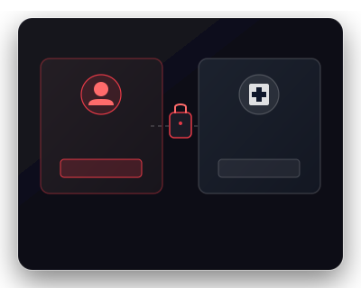
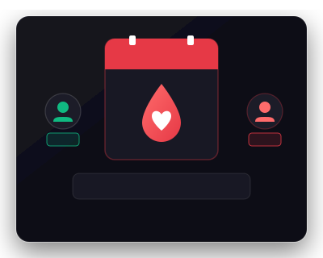

Our Services
Connecting voluntary donors with nearby hospitals when emergency blood is needed.
Real-Time Blood Availability Search
Check blood availability within 5km to 20km. See available donors and regional stock without sharing personal identities.

Blood Bank Directory
Find verified hospital blood banks and blood storage centres. Look up contact numbers and available blood units.

Interactive Health Screening
Not sure if you are eligible to donate today? Take our quick interactive health screening to instantly verify your status based on age, weight, and recent medical history.

Secure Portal Access
Dedicated portals for registered voluntary donors and verified hospitals to manage requests and donations.

Donation Drives
Find upcoming blood donation drives and camps organized by hospitals and community groups.

Check blood availability within 5km to 20km without sharing personal details.
Find verified hospital blood banks and blood storage centres near you.
Check your eligibility to donate blood with our quick screening questions.
Dedicated portals for registered voluntary donors and verified hospitals.
Find upcoming blood donation drives and camps organized near you.